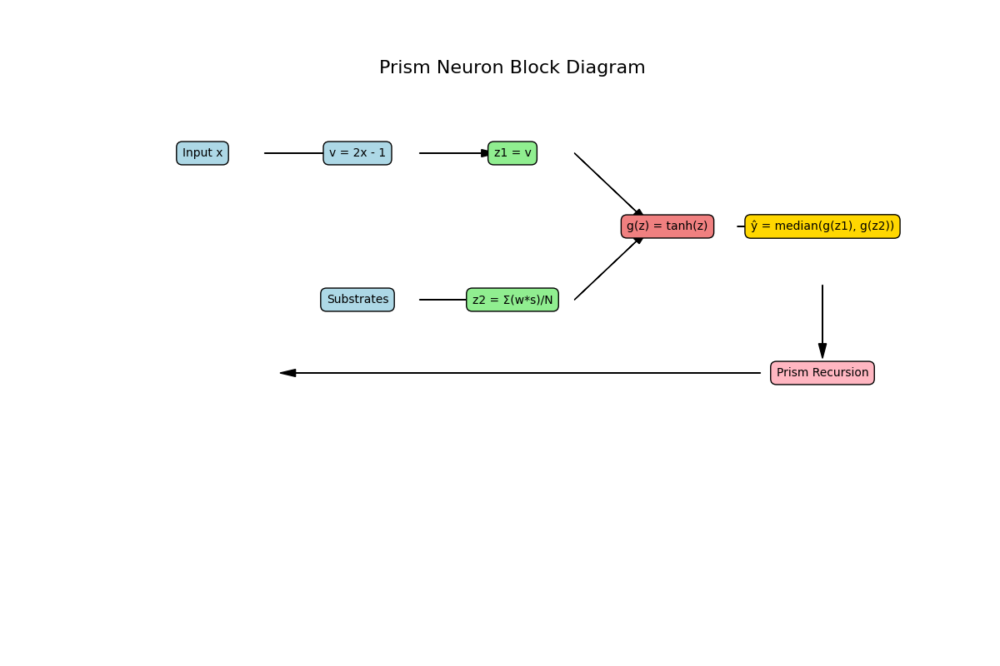

Author: Seun Ola
CEO/Researcher, 366 Degree FitTech & Sci Institute
Published: July 26, 2025
Traditional neural architectures excel at statistical pattern recognition but lack the capacity to simulate complex human emotions, particularly the internal contradictions inherent in love, betrayal, and emotional compromise. This paper introduces the Substrate-Prism Neuron, a novel cognitive framework designed to mathematically simulate emotional conflict through the layering of emotional inputs, psychological substrates, and recursive reasoning.
Prism Neuron Block:

Prism Recursion Tree:
@article{{Ola2025PrismNeuron,
title={{She Knows He Cheats But... A Substrate-Prism Neuron Architecture for Modeling Emotional Conflict in AI}},
author={{Seun Ola}},
journal={{GitHub Preprint}},
year={{2025}},
url={{https://your-username.github.io/prism-neuron}},
note={{Preprint submitted for publication}}
}}